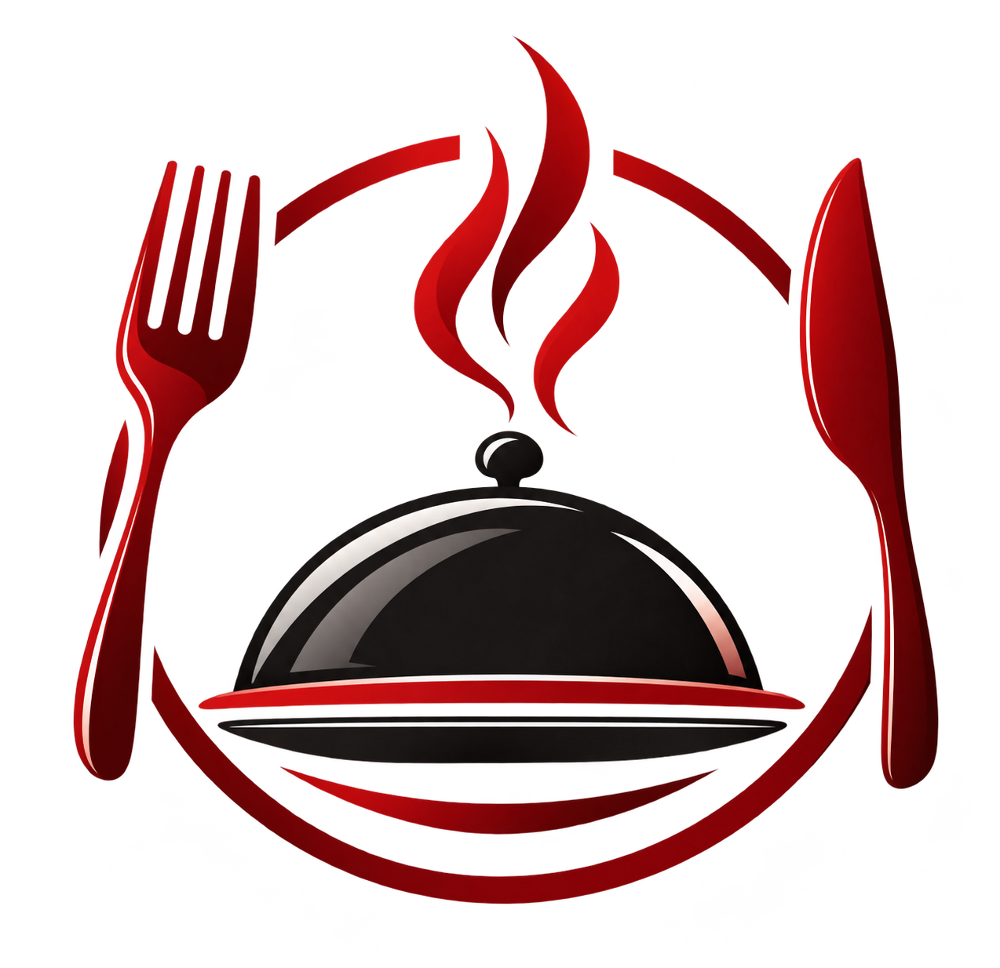

Eat & Meet
Posledná aktualizácia: zatiaľ žiadna

Cieľom projektu je zhromaždiť obedové menu reštaurácií v okolí FEI STU na jednom mieste a umožniť používateľom jednoducho si prezerať ponuku jednotlivých jedální.
Údaje o obedovom menu získavame z nasledujúcich webových stránok:
Menu jednotlivých reštaurácií načítavame z lokálnych HTML kópií uložených v priečinku projektu. Na načítanie používame Fetch API. Získaný HTML kód následne spracujeme pomocou DOMParser a pomocou jQuery selektorov z neho vyberáme potrebné údaje, napríklad názvy jedál, ich ceny a alergény.
Údaje z jednotlivých reštaurácií prevádzame do jednotnej JavaScriptovej štruktúry, aby sa dali zobrazovať rovnakým spôsobom. Spracované údaje ukladáme do localStorage, aby sa pri opätovnom otvorení stránky nemuseli vždy načítavať zdrojové súbory.